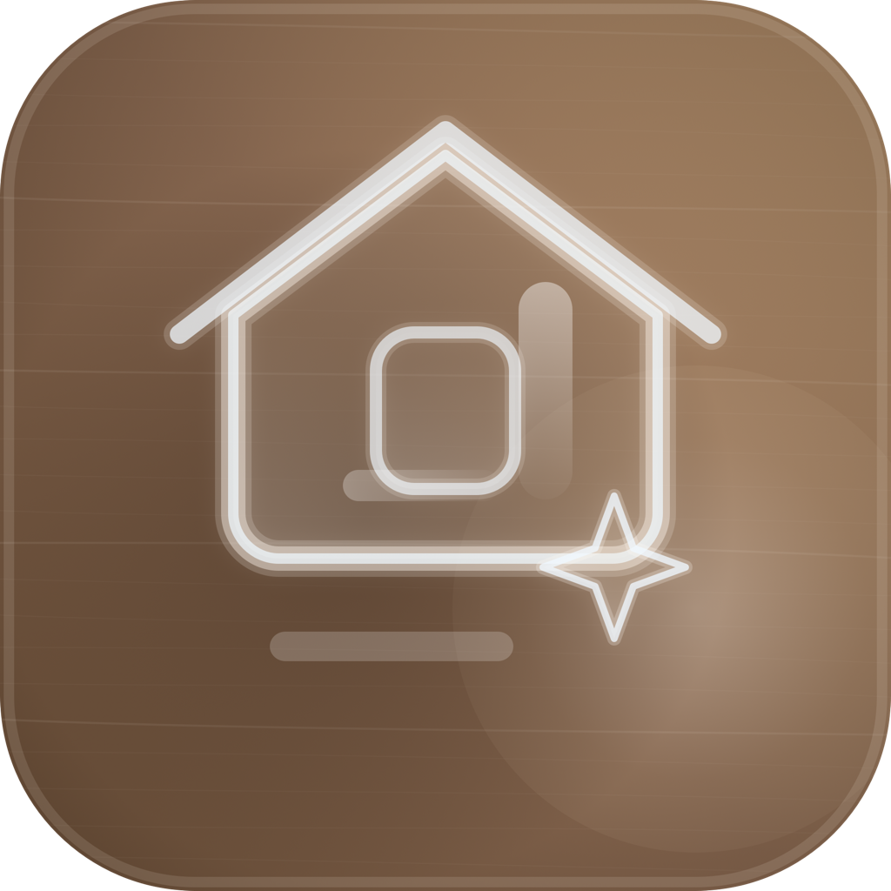

開發者聯絡方式
Victoria Cheng
若你對 app、資料刪除、隱私權、App Store 上架資料或技術支援有疑問，請直接來信。
victoriacheng1122@gmail.com
自己來設計 | Build-It-Yourself
這個頁面整合 app 1.0 版本上架需要的公開資訊， 你可以在這裡快速找到 聯絡方式、新手教學、隱私權政策 與 版權資訊。
開發者聯絡方式
若你對 app、資料刪除、隱私權、App Store 上架資料或技術支援有疑問，請直接來信。
victoriacheng1122@gmail.com快速摘要
新手教學
如果你是第一次接觸這個 app，可以先依照下面 4 步快速理解主要流程。
從客廳、臥室或商空開始，不需要一開始就自己決定全部配置。
把木地板、牆面、家具與燈具先收進風格板，之後比較會更快。
每次加入建材都會更新總價，最後可整理成透明報價單。
若你在安裝、使用、隱私權或資料刪除上有問題，可以直接寄信詢問。
隱私權政策
以下內容以目前 `自己來設計 1.0` 的實際功能為準。
本政策適用於 自己來設計（Build-It-Yourself） 1.0 版本與本頁公開說明。 App 目前提供裝潢靈感整理、模板選擇、建材收藏、材料比較、預算試算與報價匯出等功能。
依目前版本設計，大部分資料保存在使用者裝置本機，包含名稱、角色、收藏建材、模板狀態、自訂尺寸與預算資料。 目前版本不以作者自建後端集中保存這些內容。
因目前大部分資料保存在裝置本機，使用者可透過刪除 app、清除裝置資料，或在未來版本支援重設功能時移除已保存資訊。
本 app 不是以 13 歲以下兒童為主要使用對象。若你認為有兒童在未經監護人同意下提供資料，請來信聯繫，我們會協助處理。
若 app 功能、資料流程或第三方整合方式有變更，本頁內容可能更新。更新後版本會直接發佈於本網址，並以上方標示的更新日期為準。
版權說明
這一段整理 app 名稱、網站內容與素材的版權歸屬，方便送審與公開查閱。
自己來設計（Build-It-Yourself） 的 app 內容、介面設計、文案、圖像配置與本頁網站內容， 除另有註明者外，均由 Victoria Cheng 擁有或合法使用。
本頁顯示的 app icon、品牌名稱與展示畫面，僅作為本 app 的公開說明、上架審查與使用者支援用途，不代表授權第三方重製、轉售或另作商業使用。
若你對版權、授權合作、內容引用或侵權疑慮有問題，請聯絡 victoriacheng1122@gmail.com。